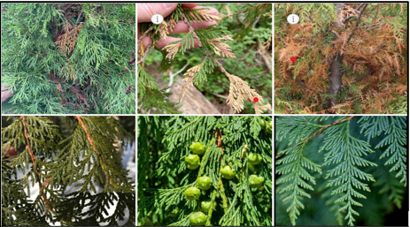
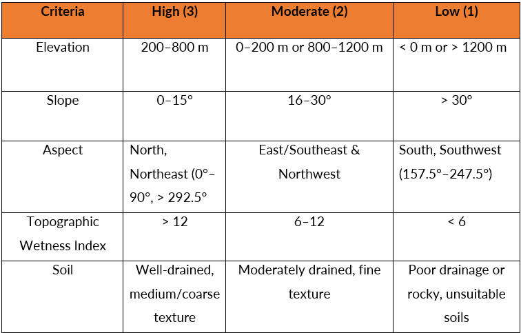
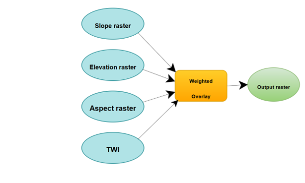

Methods
Multi-criteria Decision Analysis Approach to Site Suitability for the growth and Restoration of Western Redcedar on Vancouver Island using LiDAR
Introduction
Western Redcedar (Thuja plicata), known as Xpey’ in the Hul’q’umi’num’ language, is one of British Columbia’s most culturally and ecologically significant trees. For Indigenous communities such as the Cowichan Tribes, it is considered a “Tree of Life,” central to traditional practices, tools, and medicines (Turner, 2006). Ecologically, it supports a wide range of species and contributes to soil moisture and forest health. However, recent studies and regional observations have reported increasing signs of cedar decline due to prolonged summer droughts, soil drying, and heat stress (Kralicek et al., 2022). In many places, including Nanaimo and Metro Vancouver, entire stands are turning brown and dying; a visible sign of the intensifying effects of climate change (Metchosin Foundation, 2023; Daniels et al., 2022). This project adopts a GIS-based Multi-Criteria Decision Analysis (MCDA) framework to identify ecologically suitable sites to plant cedar trees and identify already existing cedar stands for restoration across the Cowichan, Koksilah, and Chemainus river watersheds. The goal is to support adaptive restoration planning that integrates ecological and indigenous knowledge, and guide decision-making that restores the health of cedar forests and builds long-term climate resilience in the region.

Fig1. Images of some healthy and unhealthy cedars in British Columbia
Study Area
British Columbia, located on the west coast of Canada, is known for its complex geography, temperate rainforests, and cultural importance to many Indigenous communities. This study focuses on the southeast coast of Vancouver Island, specifically within the Cowichan, Koksilah, and Chemainus River watersheds (Figure 1). The area is characterized by a mix of low to mid-elevation terrain, river valleys, and forested ecosystems that have historically supported the growth of Western Redcedar. According to the Biogeoclimatic Ecosystem Classification (BEC) system, this region is predominantly classified under the Coastal Western Hemlock (CWH) zone, which is recognized for its high humidity, moderate temperatures, and complex forest structure (Meidinger & Pojar, 1991). Portions of the area also fall within the Coastal Douglas-fir (CDFmm) and CWHxm subzones, which are drier and more prone to drought stress. These zones are critical to understanding the current and future suitability of portions of the landscape where ecological conditions remain favorable for the growth and restoration of Western Redcedar, contributing to broader goals of climate adaptation, reconciliation, and land stewardship.
Data processing
The primary dataset used in this study was a Digital Elevation Model (DEM) derived from LiDAR data, obtained from the British Columbia Data Catalogue. The individual DEM tiles with a spatial resolution of 25 meters were downloaded as part of the Terrain Resource Information Management (TRIM) dataset. These tiles were mosaicked in ArcGIS Pro using the “Mosaic to New Raster” tool in ArcGIS Pro. The resulting DEM was projected to NAD 1983 BC Environment Albers and clipped to the buffered boundary of the study area. From the processed DEM, key topographic variables were derived, including slope, aspect, and topographic wetness index (TWI). Slope and aspect were generated using standard tools within ArcGIS Spatial Analyst. TWI was calculated using a flow accumulation and slope-based approach to represent potential soil moisture conditions. All raster layers were resampled to a uniform cell resolution to maintain consistency across inputs. The resulting layers were reclassified to a common evaluation scale to support the Multi-Criteria Decision Analysis (MCDA). This standardized processing allowed for appropriate comparison, weighting, and integration of terrain variables during the suitability analysis.
| This study applied a Multi-Criteria Suitability Analysis (MCSA) using LiDAR and other spatial datasets to identify areas suitable for the growth Western Redcedar (Xpey’) across the Cowichan, Koksilah, and Chemainus River watersheds. Building on established geospatial methods in landscape ecology and restoration planning (Malczewski, 2006; Eastman, 1999), the analysis includes five core input layers: elevation, slope, aspect, topographic wetness index (TWI), and soil type. These were selected based on ecological literature describing Western Redcedar’s sensitivity to drought stress, moisture availability, and topographic conditions (Hasselquist et al., 2022; Daniels, 2003). Each input raster was reclassified into a common 3-class suitability scale (1 = Poor, 2 = Moderate, 3 = Suitable) to normalize different data ranges. Equal weights were applied to all criteria, assuming each factor has the same ecological importance. The Weighted Overlay tool then multiplied the reclassified rasters by their assigned weights and summed the results to produce a composite suitability map. This output map identifies areas with overlapping favorable conditions that will support the growth of redcedar. The suitability values reflect how well each location meets all five criteria simultaneously. Areas with higher scores are prioritized as the suitable location, as they are more likely to support healthy, climate-resilient redcedar stands. |
Step 1. Choosing the tool -Multi-Criteria Decision Analysis (MCDA) |
| To evaluate the variability of environmental and landscape level conditions across our area of interest for the project and determine where conditions are most favorable for the growth of Western redcedar, we adopted a Multi-Criteria Decision Analysis (MCDA) approach. This method enables the integration of multiple spatial and ecological variables, allowing for systematic assessment of site or location suitability based on known species preferences. We selected five key biophysical factors that influence the distribution and growth of Western redcedar: elevation, slope, aspect, topographic wetness, and soil properties. Each factor was chosen based on ecological literature and expert knowledge about the species’ growing conditions. |
 |
| Table 1. Definition and Explanation of criteria for assessing the suitable sites for cedar |
Step 2: Standardizing Criteria and Suitability Classes |
| To enable a consistent evaluation across all environmental variables, each dataset, whether raster or shapefile was reclassified into three standardized suitability levels: High (3), Moderate (2), and Low (1). This process ensured that factors measured on different scales (e.g., elevation in meters, slope in degrees, soil in categorical classes) could be uniformly compared. |
| The following five environmental factors were considered: elevation, slope, aspect, topographic wetness index (TWI), and soil characteristics. Each was reclassified based on ecological requirements for Western redcedar (Thuja plicata). For example, the species typically thrives at elevations between 200 and 800 meters and prefers gentle slopes with moist, well-drained soils (Minore, 1990; Natural Resources Canada, 2021). |
| No differential weighting was applied across the criteria. Instead, an equal-weight multi-criteria evaluation approach was used. This method assumes all factors are equally important and helps simplify the analysis without introducing subjective bias in the weighting scheme (Malczewski, 1999). The final standardized values allowed for overlay analysis to identify the most suitable areas that will support the growth of Western redcedar in the area of interest. |
|  |
| Table 2. Suitability classification and values for each environmental factor |
Step 3: Creating the Baseline Maps for the 5 Factors |
| Based on the classification scheme established in Step 2, baseline suitability maps were produced for each of the five criteria: elevation, slope, aspect, soil, and topographic wetness index (TWI). Each resulting raster or vector layer visualizes spatial patterns of suitability for Western redcedar growth across the study area. For instance, the elevation map highlights optimal growth zones between 200–800 m, while the TWI map identifies wetter microsites favorable to cedar establishment. Together, these five maps form the foundation layers for identifying areas of cumulative suitability. They ensure each factor contributes comparably to the overall assessment and support integration into the final composite suitability model. |
I. Baseline Map for Elevation |
| Elevation directly affects temperature; higher elevations are strongly correlated with colder ambient temperatures. Western redcedar grows from sea level to 910 m (3,000 ft) in southeastern Alaska. In British Columbia, the elevational range is higher-from sea level to 1190 m (3,900 ft). Redcedar is found in the interior from 320 m (1,050 ft) to 2130 m (7,000 ft). Elevation, in meters above sea level, was obtained directly from the DEM. This map classifies elevation levels based on optimal growing conditions for western redcedar. Low-to-mid elevations showed the highest suitability, reflecting the species’ preference for coastal and submontane zones. Areas above 1200 m or below sea level were considered least suitable. |
II. Baseline Map for Slope |
| To assess terrain steepness across the study area, a slope raster (in degrees) was generated using the Slope tool in the Spatial Analyst toolbox of ArcGIS Pro. This tool calculates the maximum rate of elevation change from each cell to its neighbors by fitting a plane to a 3x3 window of surrounding cells. The slope is then derived as the steepest angle of incline from the centre cell (Esri, 2024). |
| Slope is a key factor that affects the growth of Western redcedar, as it influences water retention, erosion potential, and tree root stability. Redcedar typically prefers gently sloping areas that allow for adequate water infiltration and reduced runoff. Research indicates that redcedar performs best on gently sloped terrain, where soils retain more moisture and the risk of erosion is minimized. For example, studies in coastal British Columbia (e.g., Vancouver Island and Sechelt regions) show that redcedar regeneration and growth are significantly more successful on low-gradient slopes (<15–17%) compared to steeper terrain (Dickinson, 1984). Flat or moderately sloped sites also tend to support greater biomass and healthier tree stands. |
| Based on this ecological evidence, slope values were classified into three suitability categories: |
| - High suitability (3): 0°–15° – Gentle terrain ideal for moisture retention and strong root anchoring. |
| - Moderate suitability (2): 16°–30° – Slopes that still support redcedar but with some growth limitations. |
| - Low suitability (1): >30° – Steep slopes that limit moisture retention and pose erosion risks, often unsuitable for redcedar regeneration. |
| This reclassified slope layer provides a spatial foundation for identifying areas with terrain characteristics favorable for redcedar and was integrated into the final multi-criteria suitability analysis. |
III. Baseline Map for Aspect |
| Aspect values were calculated using the Aspect tool in the Spatial Analyst toolbox in ArcGIS Pro, which determines the compass bearing (0–359°) of the steepest slope direction from each cell. For this modelling, aspect was transformed into a linear measure relevant to vegetation. The transformation produced a continuous variable that reflects the differences in exposure to solar radiation. To translate these values into ecological significance for Western redcedar, we performed a transformation that highlights moisture-retentive orientations: north and northeast-facing slopes are cooler and retain more moisture, while southwest-facing slopes receive increased solar radiation and evapotranspiration (Austin, 2005, Barry, 1992; Bolstad et al., 1998, ). |
| Based on these findings, suitability was reclassified as follows: |
| · High suitability (3): N–NE aspects (0°–90° and >292.5°) – cooler, more moisture-retentive slopes |
| · Moderate suitability (2): E–SE & NW aspects – intermediate conditions |
| · Low suitability (1): S–SW aspects (157.5°–247.5°) – warmest and driest slopes |
| Coastal redcedar studies further support this threshold; research indicates that natural regeneration is most successful on northeasterly to northwesterly slopes due to reduced heat stress and better root-zone moisture (Stage & Salas, 2007, Thuja Plicata Donn Ex D, n.d.)Therefore, south-west facing slopes were assigned a value of 0 and classified as least suitable and north-east slopes have a value of 1 and classified as suitable for redcedar growth. |
IV. Baseline Map for Topographic Wetness Index (TWI) |
| The Topographic Wetness Index (TWI) is a valuable tool for hydrologists, environmental scientists, and geographers. It quantifies the topographic control on hydrological processes and provides insights into areas that are likely to be wetter due to their landscape position(Wooton, 2010). The Topographic Wetness Index (TWI) was calculated from the Digital Elevation Model (DEM) using the Raster Calculator in ArcGIS Pro. Before computing the TWI, all sinks(pits) in the DEM were filled using the Fill tool. Pits are cells in the DEM that are surrounded by cells with higher elevation and therefore have an undefined drainage direction (Tarboton, 2008). This is a standard preprocessing step for generating accurate flow direction and flow accumulation outputs. The TWI was then calculated using the formula: TWI = ln(flow accumulation / tan(slope)), where flow accumulation represents the upslope contributing area for a given cell, and slope is the local slope gradient in radians (BEVEN & KIRKBY, 1979). |
| TWI is a useful indicator of potential soil moisture distribution, particularly in non-extreme wet or dry conditions (Winzeler et al., 2022). High TWI values tend to occur in topographic depressions and concave areas where water accumulates, while low values are associated with steep slopes and convex terrain that drain quickly. Since Western Redcedar typically grows well in moist but not overly saturated soils (Habeck, 1968; USDA Forest Service, Silvics of North America), the TWI raster was reclassified to reflect this ecological preference. Specifically, moderate TWI values were considered highly suitable (assigned a value of 3), as they represent areas with sufficient but well-drained moisture. Very low or very high TWI values were considered low suitability (assigned a value of 1), as they either lack sufficient water or are prone to waterlogging, both of which can be limiting to the growth and health of redcedar. |
Results |
| The final output of the analysis was a suitability raster identifying the most suitable areas that will support the growth of Thuja plicata, based on the five key biophysical variables: elevation, slope, aspect, topographic wetness index (TWI), and soil. Each of these input layers was standardized and assigned a new, reclassified value on an evaluation scale of 1 to 3, where 1 represents the lowest suitability and 3 the highest using the Reclassify tool. This scale provided a consistent framework for evaluating heterogeneous data inputs across different units and value ranges. |
| The Weighted Overlay tool in ArcGIS Pro was then applied to combine these standardized layers into a composite suitability analysis. This is one of the most used approaches for overlay analysis to solve multicriteria problems such as site selection and suitability models. The tool functions by assigning relative weights to each input criterion, multiplying the raster values by those weights, and summing the results to generate a final suitability score for each cell. In this case, equal weight was assigned to all five criteria based on the assumption that each factor contributes equally to the ecological conditions that support cedar growth. |
| The resulting output is a raster layer, with higher scores indicating greater environmental suitability. The most suitable areas are shown in green. Areas symbolised in red are least suitable, and blue areas are restricted (water bodies) in the map below. |
| The weighted overlay model is displayed in the image below as a process in ModelBuilder: |
|  |
| Weighted overlay model |